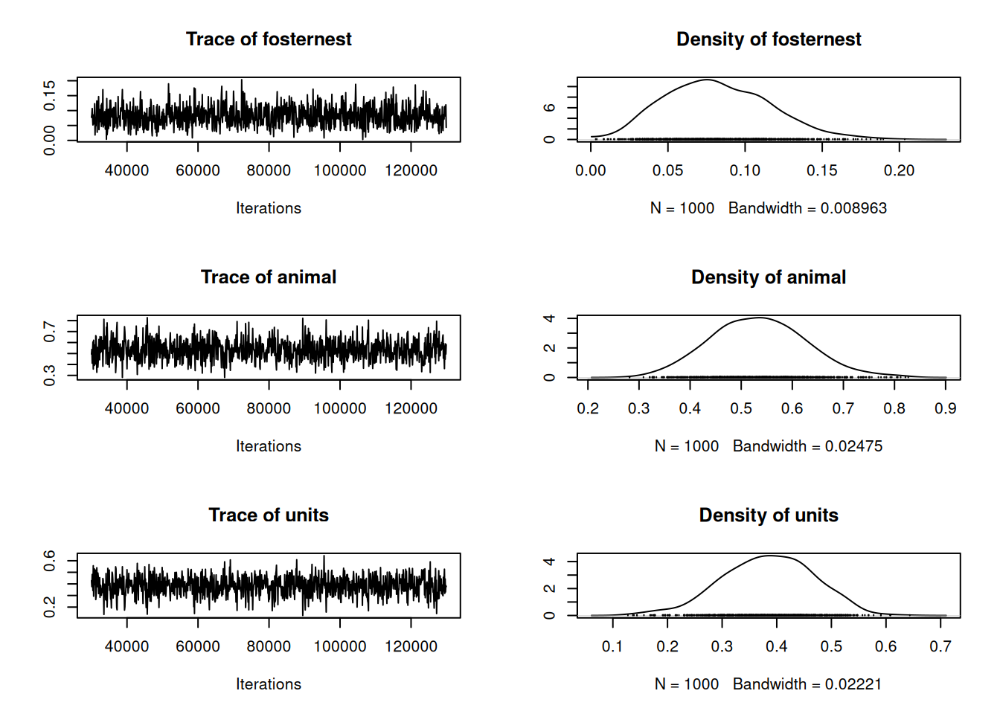
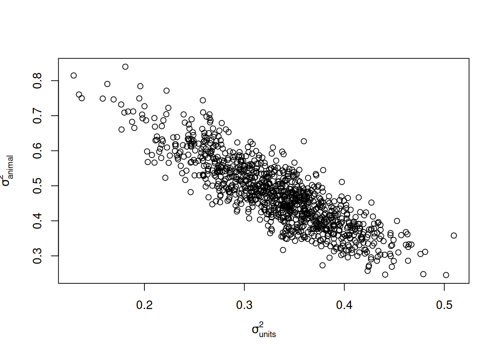
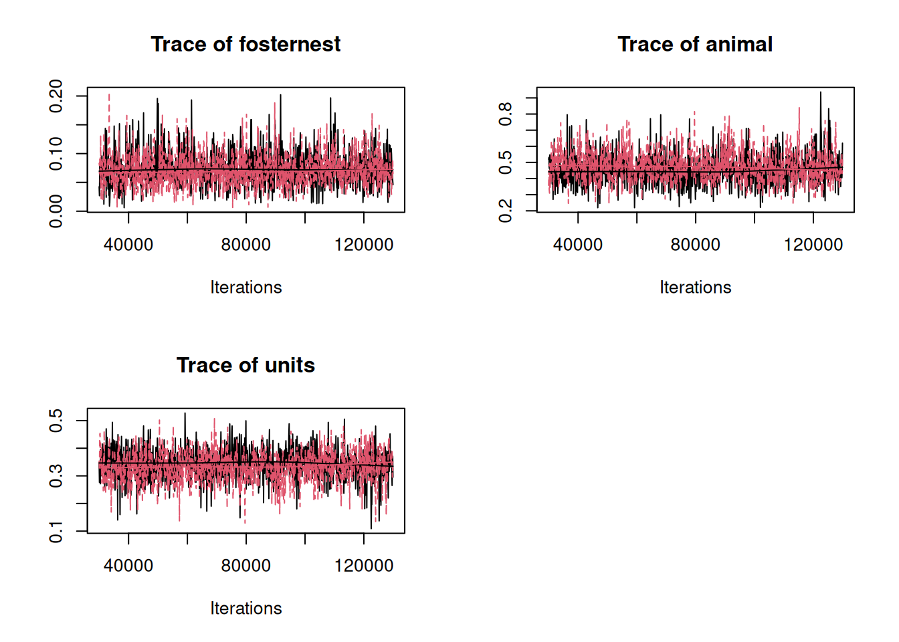
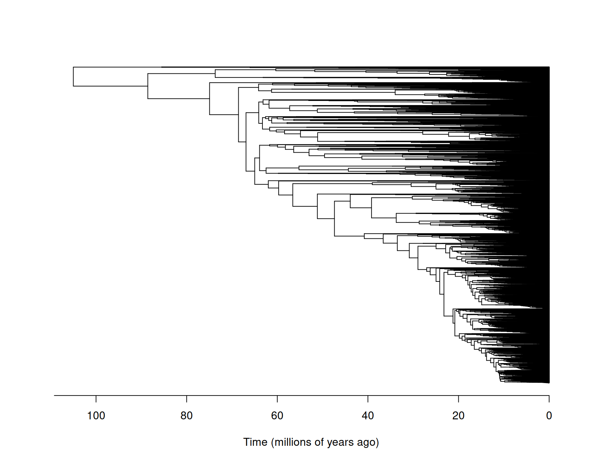
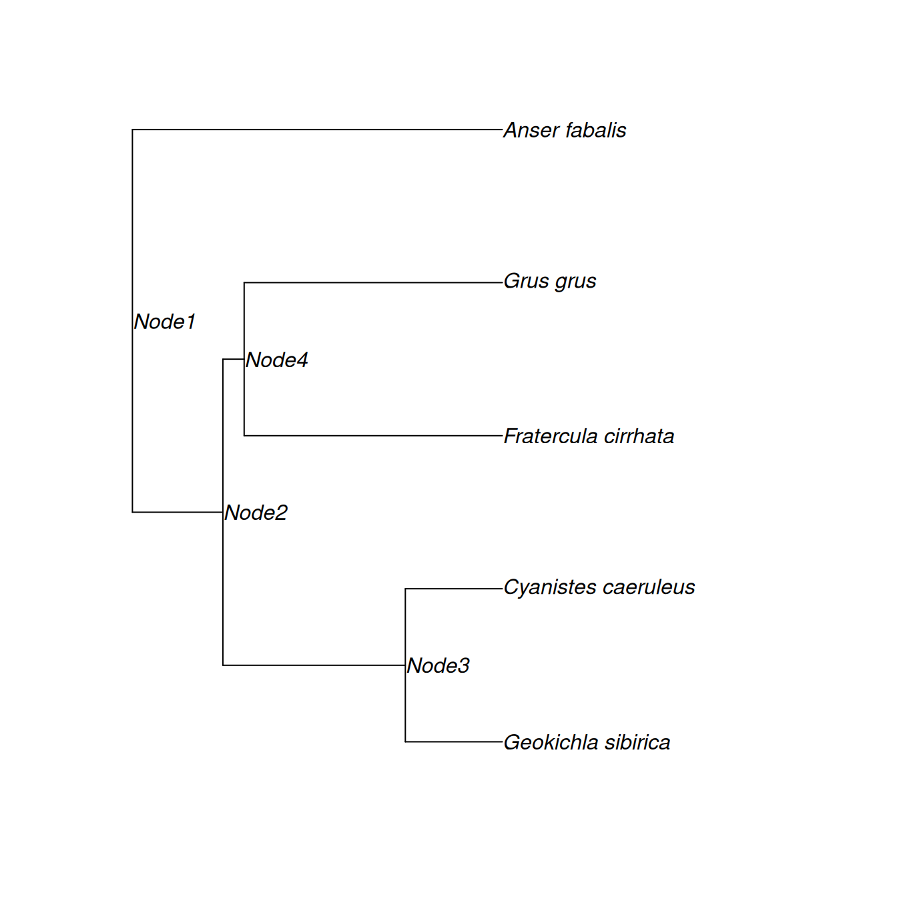
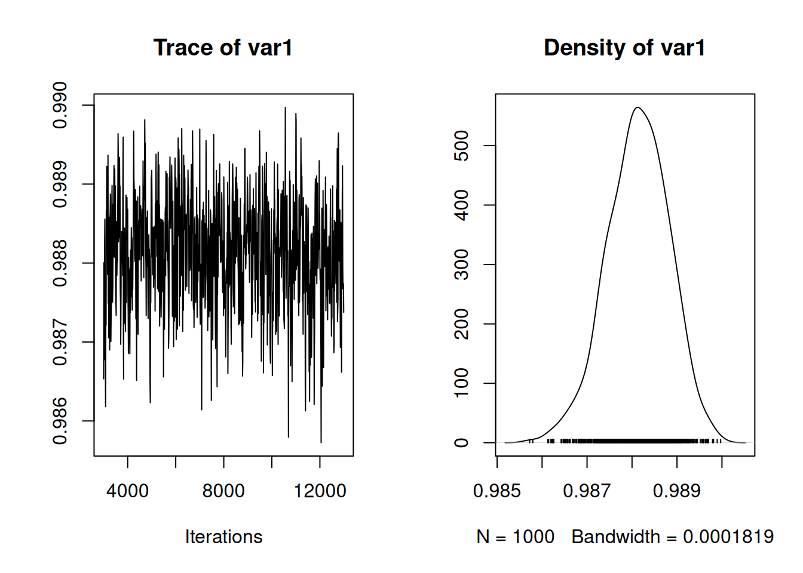
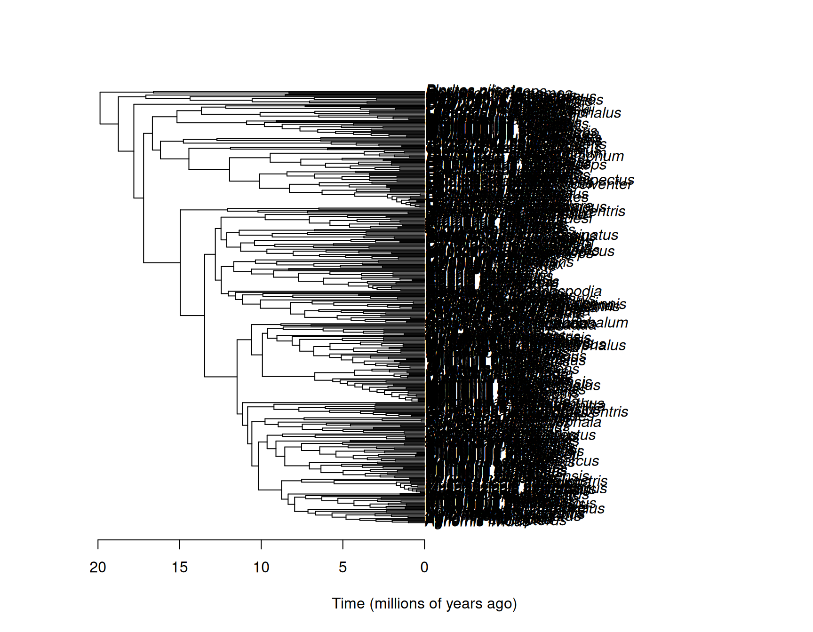
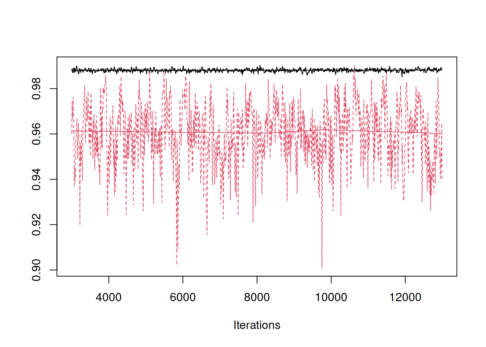

8 Structured Random Effects
In previous chapters we introduced variance functions that allow interactions between a categorical predictor (which usually has many levels and would normally be fitted as random in the absence of a interaction) and some other categorical (Chapters 5 and 7) or continuous predictor (Chapter 6). For example, in Chapter 5 we fitted a model with \(\texttt{us(virus):line}\) in the random formula. We could visualise this as setting up 201 random effects for the three types of virus (\(\texttt{France}\), \(\texttt{Greece}\) and \(\texttt{Spain}\)) across 67 genetically distinct lines of fly (\(\texttt{101A}\), \(\texttt{109A}\), …):
\[\begin{array}{c|rrrrrc} &{\color{red}{\texttt{101A}}}&{\color{red}{\texttt{109A}}}&{\color{red}{\texttt{129A}}}&{\color{red}{\texttt{142A}}}&{\color{red}{\texttt{153A}}}&\dots\\ \hline {\color{blue}{\texttt{France}}}&{\color{blue}{\texttt{France}}}.{\color{red}{\texttt{101A}}}&{\color{blue}{\texttt{France}}}.{\color{red}{\texttt{109A}}}&{\color{blue}{\texttt{France}}}.{\color{red}{\texttt{129A}}}&{\color{blue}{\texttt{France}}}.{\color{red}{\texttt{142A}}}&{\color{blue}{\texttt{France}}}.{\color{red}{\texttt{153A}}}&\dots\\ {\color{blue}{\texttt{Spain}}}&{\color{blue}{\texttt{Spain}}}.{\color{red}{\texttt{101A}}}&{\color{blue}{\texttt{Spain}}}.{\color{red}{\texttt{109A}}}&{\color{blue}{\texttt{Spain}}}.{\color{red}{\texttt{129A}}}&{\color{blue}{\texttt{Spain}}}.{\color{red}{\texttt{142A}}}&{\color{blue}{\texttt{Spain}}}.{\color{red}{\texttt{153A}}}&\dots\\ {\color{blue}{\texttt{Greece}}}&{\color{blue}{\texttt{Greece}}}.{\color{red}{\texttt{101A}}}&{\color{blue}{\texttt{Greece}}}.{\color{red}{\texttt{109A}}}&{\color{blue}{\texttt{Greece}}}.{\color{red}{\texttt{129A}}}&{\color{blue}{\texttt{Greece}}}.{\color{red}{\texttt{142A}}}&{\color{blue}{\texttt{Greece}}}.{\color{red}{\texttt{153A}}}&\dots\\ \end{array}\]
The \(\texttt{us}\) structure allows the line effects for each virus to have different variances, but it also allows the effects for the same line to be correlated across viruses: for example, the effects \({\color{blue}{\texttt{France}}}.{\color{red}{\texttt{129A}}}\) and \({\color{blue}{\texttt{Greece}}}.{\color{red}{\texttt{129A}}}\) are allowed to be correlated. However, effects from different lines are assumed to be independent, both within and between virsus: for example, the effects \({\color{blue}{\texttt{France}}}.{\color{red}{\texttt{129A}}}\) and \({\color{blue}{\texttt{France}}}.{\color{red}{\texttt{142A}}}\) are assumed independent with zero correlation since they are associated with different lines.
In some cases we would like to allow correlations between the effects associated with different lines. For example, lines 129A and 142A may be genetically very similar and so we may expect them to respond to viruses in a similar way. If the covariance structure of a set of random effects is known up to proportionality, \(\texttt{MCMCglmm}\) allows this to be specified and the constant or low-dimensional matrix of constants is estimated. We will start with the covariance structures that arise because individuals or species have shared ancestry. In the context of individuals, these models are known as ‘animal’ models and shared ancestry is represented by a pedigree. In the context of species, these models are known as phylogenetic or comparative (mixed) models and shared ancestry is represented by a phylogeny. The two models are almost identical, and are relatively minor modifications to the basic mixed model.
8.1 Pedigrees
\(\texttt{MCMCglmm}\) handles pedigrees stored in 3-column tabular form, with each row representing a single individual. The first column should contain the unique identifier of the individual, and columns 2 and 3 should be the unique identifiers of the individual’s parents. Parents must appear before their offspring in the table - the function \(\texttt{orderPed}\) from the library \(\texttt{MasterBayes}\) will reorder the pedigree of required. I usually have the dam (mother) in the first column and the sire (father) in the third. I prefer the words dam and sire because if I subscript things with \(m\) and \(f\) I can never remember whether I mean male and female, or mother and father. In hermaphrodite systems the same individual may appear in both columns, even within the same row if an individual was produced through selfing. This is not a problem, but \(\texttt{MCMCglmm}\) will issue a warning in case hermaphrodites are not present and a data entry mistake has been made. Impossible pedigrees (for example individual’s that give birth to their own mother) are a problem and \(\texttt{MCMCglmm}\) will issue an error, hopefully with an appropriate message, when impossibilities are detected.
If the parent(s) of an individual are unknown then a missing value (NA) should be assigned in the relevant column. All individuals appearing as dams or sires need to have their own record, even if both of their parents are unknown. The function \(\texttt{insertPed}\) will return a pedigree table with these individuals inserted if they are missing. Often the number of individuals in a pedigree will be greater than the number of individuals for which phenotypic data exist. \(\texttt{MCMCglmm}\) can handle this, as long as all the individuals appearing in the data frame passed to data also appear in the pedigree. However, it will be more efficient to prune out individuals from the pedigree that lack phenotypic data and which are not required in order to determine the relatedness of two or more phenotyped individuals (e.g. the unphenotyped parents of two siblings) - the function \(\texttt{prunePed}\) will do this 41.
To illustrate, we can load a pedigree for a population of blue tits and display the pedigree for the nuclear family that has individuals \(\texttt{R187920}\) and \(\texttt{R187921}\) as parents:
data(BTped)
Nped <- BTped[which(apply(BTped, 1, function(x) {
any(x == "R187920" | x == "R187921")
})), ]
Nped## animal dam sire
## 66 R187920 <NA> <NA>
## 172 R187921 <NA> <NA>
## 325 R187726 R187920 R187921
## 411 R187724 R187920 R187921
## 503 R187723 R187920 R187921
## 838 R187613 R187920 R187921
## 932 R187612 R187920 R187921
## 1030 R187609 R187920 R187921Both parents form part of what is known as the base population - they are assumed to be outbred and unrelated to anybody else in the pedigree. A pedigree can also be expressed in terms of a relatedness matrix \({\bf A}\). This matrix is symmetric, square, and has dimensions equal to the number of individuals in the pedigree. Simple, but perhaps slow, recursive methods exist for calculating \({\bf A}\):
## R187920 R187921 R187726 R187724 R187723 R187613 R187612 R187609
## R187920 1.0 0.0 0.5 0.5 0.5 0.5 0.5 0.5
## R187921 0.0 1.0 0.5 0.5 0.5 0.5 0.5 0.5
## R187726 0.5 0.5 1.0 0.5 0.5 0.5 0.5 0.5
## R187724 0.5 0.5 0.5 1.0 0.5 0.5 0.5 0.5
## R187723 0.5 0.5 0.5 0.5 1.0 0.5 0.5 0.5
## R187613 0.5 0.5 0.5 0.5 0.5 1.0 0.5 0.5
## R187612 0.5 0.5 0.5 0.5 0.5 0.5 1.0 0.5
## R187609 0.5 0.5 0.5 0.5 0.5 0.5 0.5 1.0In ‘animal’ models, each individual is associated with a unique random effect (often called a ‘breeding value’) and their covariance structure is assumed to proportional to \({\bf A}\) rather than an identity matrix. This non-identity covariance structure allows the associated variance to be estimated even when there is only one observation per individual. Although \({\bf A}\) has quite a straightforward interpretation, \(\texttt{MCMCglmm}\) actually requires the inverse of \({\bf A}\) which can be obtained using the function \(\texttt{inverseA}\). We can create this for the full pedigree which consists of 106 nuclear families with two parents and between 1 and 15 of their offspring offspring.
The data set \(\texttt{BTdata}\) contains information collected on their offspring: the length of one of their leg bones (\(\texttt{tarsus}\)) together with their identifier (\(\texttt{animal}\)) their sex (\(\texttt{sex}\)) and the nest they were raised in (\(\texttt{fosternest}\)). Note that roughly half the chicks in each nest were switched into another nest soon after hatching and so the identity of the nuclear family and \(\texttt{fosternest}\) are not completely confounded. We can fit a model which includes both \(\texttt{fosternest}\) nest effects and also \(\texttt{animal}\) effects that are correlated through a pedigree:
data(BTdata)
prior.animal <- list(R = IW(1, 0.002), G = F(1, 1000))
m.animal <- MCMCglmm(tarsus ~ sex, random = ~fosternest + animal, data = BTdata,
ginv = list(animal = Ainv), prior = prior.animal, longer = 10)The \(\texttt{ginv}\) argument takes a list of inverse covariance structures (just \(\texttt{Ainv}\) in this example) where the names of the list elements state the name of the effects the covariance structure is associated with (just \(\texttt{animal}\) in this example).
##
## Iterations = 30001:129901
## Thinning interval = 100
## Sample size = 1000
##
## DIC: 1817.833
##
## G-structure: ~fosternest
##
## post.mean l-95% CI u-95% CI eff.samp
## fosternest 0.07098 0.0173 0.1269 1000
##
## ~animal
##
## post.mean l-95% CI u-95% CI eff.samp
## animal 0.4759 0.2949 0.6651 645.1
##
## R-structure: ~units
##
## post.mean l-95% CI u-95% CI eff.samp
## units 0.3327 0.21 0.4392 627.1
##
## Location effects: tarsus ~ sex
##
## post.mean l-95% CI u-95% CI eff.samp pMCMC
## (Intercept) -0.40345 -0.53567 -0.26481 857.7 <0.001 ***
## sexMale 0.76663 0.64303 0.86860 1000.0 <0.001 ***
## sexUNK 0.20636 -0.04028 0.45147 1000.0 0.09 .
## ---
## Signif. codes: 0 '***' 0.001 '**' 0.01 '*' 0.05 '.' 0.1 ' ' 1Often, the variances of the random effects are expressed as proportions of the total variance:

and can see that the while the nest a chick is raised in (\(\texttt{fosternest}\)) explains relatively little variation, the genetic variance (the variance in \(\texttt{animal}\) effects) explains around half the total. It is also apparent from the MCMC traces that despite the chain being run for 10 times longer than the default (\(\texttt{longer=10}\)) there is still a bit of autocorrelation. In general, animal models mix less well than most models, in part because of strong posterior correlations between the genetic and residual variance:
plot(c(m.animal$VCV[, "animal"]) ~ c(m.animal$VCV[, "units"]), ylab = expression(sigma[animal]^2),
xlab = expression(sigma[units]^2))
This correlation exists because each offspring receives a unique jumble of it’s parents genome, the effect of which (the Mendelian sampling deviation) is confounded with the effect of the unique environmental factors the offspring experiences (the residual). This can be observed in the relatedness matrix \(\texttt{Aped}\) where the diagonal elements are one yet the off-diagonal elements are at best a half. In this particular example, the relatedness structure of phenotyped individuals is very simple: either individuals share a mother (or father) and are related by a half since they are full-siblings or they are completely unrelated. Consequently, an equivalent model is to fit nuclear family as an effect (by fitting mother (\(\texttt{dam}\)) effects) rather than pedigree (\(\texttt{animal}\)) effects:
prior.sib <- list(R = IW(1, 0.002), G = F(1, 1000))
m.sib <- MCMCglmm(tarsus ~ sex, random = ~fosternest + dam, data = BTdata, prior = prior.sib)In this model, the \(\texttt{units}\) variance is the variance due to environmental effects and the genetic effects unique to an individual. Under the assumptions of the animal model, the variance of the unique genetic effects is assumed to be half the genetic variance. Under the assumptions of the animal model, the \(\texttt{dam}\) variance should be half the genetic variance since it is the variance due to the 50% of the genome full siblings share. Consequently, \(2\sigma^2_{dam}\) from m.sib should be equivalent to the \(\texttt{animal}\) variance from m.animal, and \(\sigma^2_{units}-\sigma^2_{dam}\) from m.sib should be equivalent to the \(\texttt{units}\) variance from m.animal:

Slight discrepancies exist because the prior specifications are not equivalent.
8.2 Phylogenies
Phylogenies can also be expressed in tabular form, although only two columns are required because for each species we only need to record a single ‘parent’ - an immediate ancestor of that species. In general, however, phylogenies are stored as bifurcating trees and I have stuck with convention and used the phylo class from the ape package to store phylogenies. To illustrate, we can use the phylogeny of the world’s birds available through the package \(\texttt{clootl}\):
The phylogeny is plotted in Figure 8.1.

Figure 8.1: The phylogeny of the world’s birds with species names omitted for legibility. I have had to guess what units time has been measured in due to lack of documentation.
Each tip (on the right) corresponds to an extant (or recently extinct) species. If we follow the branches back from a pair of tips they will eventually meet at an internal node. This node is the most recent common ancestor of the two species. For some pairs, this node is at the very base of the tree (on the left) and the node is referred to as the root. In pedigrees, a single generation elapses between a parent and an offspring. However, in phylogenies a variable number of generations (or amount of time) may elapse between parents and their daughter species and this is represented by the length of the branch that connects two nodes.
We can, if we wish, extract the phylogeny in tabular form. Let’s do this for a subset of species: Siberian Thrush (Geokichla sibirica), Blue tit (Cyanistes caeruleus), Tufted Puffin (Fratercula cirrhata), Common Crane (Grus grus) and Bean Goose (Anser fabalis).
my.species <- c("Geokichla_sibirica", "Cyanistes_caeruleus", "Fratercula_cirrhata",
"Grus_grus", "Anser_fabalis")
Nphylo <- drop.tip(bird.tree, setdiff(bird.tree$tip.label, my.species))The phylogeny is shown in Figure 8.2 and it should be noted that pruning is automatically done: all ancestral species have been stripped out except those that allow us to determine the relatedness between the species at the tip.

Figure 8.2: The phylogeny for five bird species: Siberian Thrush (Geokichla sibirica), Blue tit (Cyanistes caeruleus), Tufted Puffin (Fratercula cirrhata), Common Crane (Grus grus) and Bean Goose (Anser fabalis). John Nelder, the father of GLM, found the UK’s first Siberian Thrush. Data from Blue Tits and Tufted Puffins appear in this Chapter and Chapter 7, respectively. The word pedigree comes from the French for Crane’s foot, and I found a (Tundra) Bean Goose this week.
This phylogeny in tabular form looks like:
## node.names
## [1,] "Node2" NA NA
## [2,] "Node3" "Node2" NA
## [3,] "Node4" "Node2" NA
## [4,] "Anser_fabalis" NA NA
## [5,] "Geokichla_sibirica" "Node3" NA
## [6,] "Cyanistes_caeruleus" "Node3" NA
## [7,] "Fratercula_cirrhata" "Node4" NA
## [8,] "Grus_grus" "Node4" NAYou will notice that \(\texttt{Node1}\) - the root - does not appear in the phylogeny in tabular form. This is because the root is equivalent to the base population in a pedigree analysis, something we will come back to later. Another piece of information that seems to be lacking in the tabular form is the branch length information. Branch lengths are equivalent to inbreeding coefficients in a pedigree. As with pedigrees the inbreeding coefficients are calculated by inverseA:
## [1] 0.24470987 0.49315470 0.05737447 1.00000000 0.26213544 0.26213544 0.69791566
## [8] 0.69791566You will notice that the branch length for Anser fabalis is one. This is because there are no internal nodes between the root and the Anser fabalis, and we used the default scale=TRUE in the call to \(\texttt{inverseA}\). scale=TRUE rescales the branch lengths by a constant so that the total branch length from the root to each tip is one. For example, to get the total branch length from the root to Geokichla sibirica we need to sum the branch lengths from \(\texttt{Node1}\) to \(\texttt{Node2}\), \(\texttt{Node2}\) to \(\texttt{Node3}\), and \(\texttt{Node3}\) to \(\texttt{Geokichla_sibirica}\):
sum(INphylo$inbreeding[which(INphylo$pedigree[, 1] %in% c("Node2", "Node3", "Geokichla_sibirica"))])## [1] 1and is also equal to one. It is only possible to scale the tree if the tree is ultrametric - the total branch length from the root to each tip is constant before rescaling. In fact the original \(\texttt{bird.tree}\) obtained using extractTree was not exactly ultrametric - there were small differences in total branch lengths due to rounding errors and the the function \(\texttt{force.ultrametric}\) from \(\texttt{phyltools}\) had to be used. We can also generate the \({\bf A}\) matrix for this small phylogeny and we can see that element \(ij\) is equal to the proportion of time species/node \(i\) and \(j\) have shared ancestry.
## 8 x 8 sparse Matrix of class "dgCMatrix"
## Node2 Node3 Node4 A_fab G_sib C_cae F_cir G_gru
## Node2 0.245 0.245 0.245 . 0.245 0.245 0.245 0.245
## Node3 0.245 0.738 0.245 . 0.738 0.738 0.245 0.245
## Node4 0.245 0.245 0.302 . 0.245 0.245 0.302 0.302
## A_fab . . . 1 . . . .
## G_sib 0.245 0.738 0.245 . 1.000 0.738 0.245 0.245
## C_cae 0.245 0.738 0.245 . 0.738 1.000 0.245 0.245
## F_cir 0.245 0.245 0.302 . 0.245 0.245 1.000 0.302
## G_gru 0.245 0.245 0.302 . 0.245 0.245 0.302 1.000If scale=FALSE had been passed to \(\texttt{inverseA}\) the elements would be the amount of time shared rather than the proportion.
The AVONET data-base, available through the package \(\texttt{PNC}\), contains information about the world’s birds:
As with pedigrees, all species appearing in \(\texttt{data}\) need to appear in the phylogeny. Typically, this will be the species at the tips of the phylogeny and so all species in \(\texttt{data}\) should appear as a \(\texttt{tip.label}\) in the \(\texttt{phylo}\) object. The internal nodes in the phylogeny are typically ancestral species. Data may also exist for these ancestral species, or even for species present at the tips but measured many generations before. It is possible to include these data in the analysis as long as the phylogeny has labelled internal nodes that correspond to a species in \(\texttt{data}\). Before we proceed with an analysis we need to do a bit of housekeeping. The names in the data and phylogeny are formatted slightly differently - we need to replace the space between the generic and specific name with an underscore:
We also need to rename the column \(\texttt{family}\) in \(\texttt{bird.data}\) as $ will then expect a long-format multi-response model with the \(\texttt{family}\) column specifying the distribution (see Section 7.3):
Finally, there are 1297 species that appear in \(\texttt{bird.data}\) that are not represented in the phylogeny. In many cases this is probably due to taxonomic revisions, and the species do appear but under a different name. Here, we will simply omit these species from the analysis.
We will also prune the phylogeny so that species that are not present in \(\texttt{bird.data}\) are dropped.
Let’s build a model for the tarsus lengths of the world’s birds. We’ll work on the log-scale since the lengths are heavily right skewed and span several orders of magnitude:
Ainv <- inverseA(bird.tree)$Ainv
prior.phylo = list(R = IW(1, 0.002), G = F(1, 1000))
m.phylo <- MCMCglmm(log(Tarsus.Length) ~ 1, random = ~species, data = bird.data,
ginv = list(species = Ainv), prior = prior.phylo)
summary(m.phylo)##
## Iterations = 3001:12991
## Thinning interval = 10
## Sample size = 1000
##
## DIC: -20415.86
##
## G-structure: ~species
##
## post.mean l-95% CI u-95% CI eff.samp
## species 0.2753 0.2653 0.2851 844.3
##
## R-structure: ~units
##
## post.mean l-95% CI u-95% CI eff.samp
## units 0.003319 0.003031 0.003633 573.6
##
## Location effects: log(Tarsus.Length) ~ 1
##
## post.mean l-95% CI u-95% CI eff.samp pMCMC
## (Intercept) 4.415 4.003 4.805 1050 <0.001 ***
## ---
## Signif. codes: 0 '***' 0.001 '**' 0.01 '*' 0.05 '.' 0.1 ' ' 1The intercept in a phylogentic model is the estimated value for the ancestor of all sampled taxa - the root of the phylogeny. On the arithmetic scale an intercept of 4.42 translates into 84.55mm - roughly the length of a Buzzard’s tarsus, and probably not too different from the tarsus length of Archaeopteryx. The phylogenetic variance is substantially larger than the residual variance. In general, comparing these two variances directly is not meaningful since the phylogenetic variance is in units of trait squared per unit time whereas the residual variance is in units of traits squared. Nevertheless, it is is common to treat them as comparable by multiplying the phylogenetic variance by the time (\(T\)) that has elapsed from root to tip 42. Then, the variance in the response at the tips of the phylogeny is expected to be \(\sigma^2_{\texttt{units}}+T\sigma^2_{\texttt{phylo}}\) and the proportion of the total variance that can be explained by the phylogeny is often reported: \(T\sigma^2_{\texttt{phylo}}/(\sigma^2_{\texttt{units}}+T\sigma^2_{\texttt{species}})\). This is commonly referred to as the phylogenetic heritability or phylogenetic signal. When calculating the inverse using the function \(\texttt{inverseA}\), the tree was scaled to unit length by default and so \(T=1\) and the phylogenetic heritability is simply \(\sigma^2_{\texttt{phylo}}/(\sigma^2_{\texttt{units}}+\sigma^2_{\texttt{species}})\):

We can see that it is very high, with almost all of the variation explained by the phylogeny. However, I think the notion that the phylogenetic heritability is unitless and comparable across traits or taxa is misguided. When we perform an analysis with a scaled tree, the phylogenetic variance still has units, but rather than being in the tree’s original units, it’s in units of total time. Unfortunately, I can find no information about what units time is measured in, but given the root-to-tip branch length is 105.010005 I presume one unit is a million years. Consequently, \(\sigma^2_{\texttt{species}}\) from the model is really in units of mm^2 per 105.010005^6 years$ and is not unitless. To understand the consequence of this, let’s use the tarsus lengths of the Tyrant flycatchers (Tyrannidae) - the most speciose bird family for which we have data on sum(bird.data$species%in%tyrants) species:
tyrants <- bird.data$species[which(bird.data$Family == "Tyrannidae")]
tyrant.data <- subset(bird.data, species %in% tyrants)
tyrant.tree <- drop.tip(bird.tree, setdiff(bird.tree$tip.label, tyrant.data$species))As can be seen in Figure 8.3, the tree has been re-rooted - the root node is not the most recent common ancestor off all birds, but the most recent common ancestor of those Tyrant flycatchers in \(\texttt{bird.data}\).

Figure 8.3: The phylogeny of the Tyrant flycatchers.
Consequently, when we obtain the inverse covariance structure using the default scale=TRUE in \(\texttt{inverseA}\) the associated variance will be in units of the trait squared per 19.8744913^6 years$. We can fit a model to the log tarsus lengths of Tyrant flycatchers:
tyrant.Ainv <- inverseA(tyrant.tree)$Ainv
m.tyrant <- MCMCglmm(log(Tarsus.Length) ~ 1, random = ~species, data = tyrant.data,
ginv = list(species = tyrant.Ainv), prior = prior.phylo)
summary(m.tyrant)##
## Iterations = 3001:12991
## Thinning interval = 10
## Sample size = 1000
##
## DIC: -1108.995
##
## G-structure: ~species
##
## post.mean l-95% CI u-95% CI eff.samp
## species 0.0439 0.03575 0.05233 436.1
##
## R-structure: ~units
##
## post.mean l-95% CI u-95% CI eff.samp
## units 0.001785 0.0008237 0.002819 247.4
##
## Location effects: log(Tarsus.Length) ~ 1
##
## post.mean l-95% CI u-95% CI eff.samp pMCMC
## (Intercept) 2.804 2.646 2.949 1072 <0.001 ***
## ---
## Signif. codes: 0 '***' 0.001 '**' 0.01 '*' 0.05 '.' 0.1 ' ' 1The model summary shows that the residual variance is comparable in magnitude to that obtained from the analysis of all birds (m.phylo), but the species variance is more than 6 times smaller. Similarly, the phylogentic heritability, although still large, is smaller than that obtained from the analysis of all birds.
plot(mcmc.list(m.phylo$VCV[, "species"]/rowSums(m.phylo$VCV), m.tyrant$VCV[, "species"]/rowSums(m.tyrant$VCV)),
density = FALSE)
Naively, we might conclude that phylogenetic effects are less important for Tyrant flycatchers than they are for birds as a whole. However, if we express the variances in the same units (mm\(^2\) per million years)
# root-to-tip distances
all.depth <- node.depth.edgelength(bird.tree)[1]
tyrant.depth <- node.depth.edgelength(tyrant.tree)[1]
# posterior mean phylogenetic variances in units mm^2 per million years
mean(m.phylo$VCV[, "species"]/all.depth)## [1] 0.002621654## [1] 0.002208867the difference is much more subtle, with the phylogenetic variance being only about 19% smaller in the Tyrant flycatchers.
8.2.1 nodes="TIPS"
For some reason, using the argument nodes="TIPS" in \(\texttt{inverseA}\) became common-place around 2015. This argument only exists to show how inefficient the standard parameterisation of the phylogenetic mixed model is. The default argument nodes="ALL" should be used. For example, the model m.phylo involves 9712 species and takes around 30 seconds to run on my machine with nodes="ALL". With nodes="TIPS" the same analysis would take weeks. Why such a large difference in speed? When thinking about the assumed covariance structure of effects in an animal or phylogenetic model it makes sense to think about the \({\bf A}\) matrix. Previously, we looked at the \({\bf A}\) matrix for our small 5-species phylogeny. The \({\bf A}\) matrix was \(8\times 8\) because it also included the three internal nodes (see Figure 8.2). Let’s have a look at it again (note dots in a sparse matrix represent zeros):
## 8 x 8 sparse Matrix of class "dgCMatrix"
## Node2 Node3 Node4 A_fab G_sib C_cae F_cir G_gru
## Node2 0.245 0.245 0.245 . 0.245 0.245 0.245 0.245
## Node3 0.245 0.738 0.245 . 0.738 0.738 0.245 0.245
## Node4 0.245 0.245 0.302 . 0.245 0.245 0.302 0.302
## A_fab . . . 1 . . . .
## G_sib 0.245 0.738 0.245 . 1.000 0.738 0.245 0.245
## C_cae 0.245 0.738 0.245 . 0.738 1.000 0.245 0.245
## F_cir 0.245 0.245 0.302 . 0.245 0.245 1.000 0.302
## G_gru 0.245 0.245 0.302 . 0.245 0.245 0.302 1.000Including the internal nodes in the \({\bf A}\) matrix seems silly - we don’t have observations for these nodes, why not just focus on the \({\bf A}\) matrix for the 5 sampled species? By specifying nodes="TIPS", this is exactly what is done - we work with the following \(5\times 5\) matrix:
## 5 x 5 sparse Matrix of class "dgCMatrix"
## A_fab G_sib C_cae F_cir G_gru
## A_fab 1 . . . .
## G_sib . 1.000 0.738 0.245 0.245
## C_cae . 0.738 1.000 0.245 0.245
## F_cir . 0.245 0.245 1.000 0.302
## G_gru . 0.245 0.245 0.302 1.000However, the mixed model equations are not set up in terms of \({\bf A}\), but its inverse - \({\bf A}^{-1}\). For the tips, the inverse doesn’t seem to have any special properties:
## 5 x 5 sparse Matrix of class "dgCMatrix"
## A_fab G_sib C_cae F_cir G_gru
## A_fab 1 . . . .
## G_sib . 2.229 -1.586 -0.121 -0.121
## C_cae . -1.586 2.229 -0.121 -0.121
## F_cir . -0.121 -0.121 1.146 -0.287
## G_gru . -0.121 -0.121 -0.287 1.146As with \({\bf A}\), all pairs of species that share a common ancestor before the root have a non-zero entry in the inverse. For the full bird phylogeny, a whopping 93183890 elements of \({\bf A}^{-1}\) have a non-zero entry - around 98.8%. However, if we look of the inverse for the \(8\times 8\) \({\bf A}\) matrix, where internal nodes are included, the structure of \({\bf A}^{-1}\) seems to differ from \({\bf A}\) - it is sparser (has more zeros):
## 8 x 8 sparse Matrix of class "dgCMatrix"
## Node2 Node3 Node4 A_fab G_sib C_cae F_cir G_gru
## Node2 23.544 -2.028 -17.429 . . . . .
## Node3 -2.028 9.657 . . -3.815 -3.815 . .
## Node4 -17.429 . 20.295 . . . -1.433 -1.433
## A_fab . . . 1 . . . .
## G_sib . -3.815 . . 3.815 . . .
## C_cae . -3.815 . . . 3.815 . .
## F_cir . . -1.433 . . . 1.433 .
## G_gru . . -1.433 . . . . 1.433The increase in sparsity grows as the tree becomes larger, and for the full bird phylogeny a comparatively miniscule 58262 elements of \({\bf A}^{-1}\) have a non-zero entry. However, the gain in efficiency is not so much due to the increase in the number of zeros, but their position. In inverse covariance matrices, a zero indicates that two variables are conditionally independent. In a phylogeny, two species/nodes are conditionally independent given their common ancestor. Consequently, the only non-zero elements (other than the diagonal) are between a species/node and it’s direct ancestor (which it only has one of) and its direct descendants (which it has up to two, usually43). When solving simultaneous equations (as is necessary in mixed models) large improvements in speed can be made by ordering the equations in a way that the number of substitutions can be minimised and general algorithms - such as minimum degree ordering - are used for finding good orderings. By including the internal nodes in \({\bf A}^{-1}\) the pattern of conditional independence is revealed to such algorithms and the tip effects are solved first, followed by the effects of their immediate ancestors and so on until the root is reached. For simple models this results in Felsenstein’s peeling algorithm, which is reinvented every 10 years or so. For more general models, algorithms such as minimum degree ordering will find good orderings without the need to spend time developing new algorithms for every new problem.
In the context of pedigrees, similar sparsity patterns exist. With Mendelian genetics you receive a random half of your dad’s genome and a random half of your mum’s genome. Consequently, once you condition on a parent’s effect (breeding value), siblings’ breeding values are independent since they receive a random half of their parent’s genome. There are no individuals that could make offspring conditionally independent of their parents since they receive their genetic material directly from them. Perhaps more surprisingly, we also have a non-zero element between the mum and dad, despite them being unrelated. The reason for this is that information on a spouse’s genome provides information about the focal individual’s genome if they have offspring together. To see this, imagine all offspring are heterozygous at a site (carry an \(a\) allele and a \(A\) allele). If we knew the spouse was \(AA\) then the focal individual must either be \(aa\) or \(Aa\), and most likely \(aa\) if they have many offspring that are all heterozygote. If we look at \({\bf A}^{-1}\) for the nuclear family of Blue Tits from Section @ref{pedigree-sec} we can see this structure (the two parents are followed by their six offspring):
## 8 x 8 sparse Matrix of class "dgCMatrix"
##
## R187920 4 3 -1 -1 -1 -1 -1 -1
## R187921 3 4 -1 -1 -1 -1 -1 -1
## R187726 -1 -1 2 . . . . .
## R187724 -1 -1 . 2 . . . .
## R187723 -1 -1 . . 2 . . .
## R187613 -1 -1 . . . 2 . .
## R187612 -1 -1 . . . . 2 .
## R187609 -1 -1 . . . . . 28.3 User-defined covariance structures
In the previous two sections we have looked at known (up to proportionality) covariance structures that arise from pedigrees and phylogenies. However, user-defined covariance structures can be fitted. The inverse must be obtained and stored as a sparse matrix of class \(\texttt{dgCMatrix}\). It must also have \(\texttt{rownames}\) that correspond to the associated predictor in the data frame. The inverse can then be passed using the \(\texttt{ginverse}\) argument to \(\texttt{MCMCglmm}\). If the inverse has little structure and few zero’s, model fitting may take some time.
If you pass a pedigree to \(\texttt{prunePed}\) with the id’s of phenotyped individuals specified in the argument \(\texttt{keep}\) a pruned pedigree is returned. Pruning the pedigree has no impact on the posterior distribution but it can improve mixing and speed. In earlier versions of MCMCglmm (<3.0) the default argument to \(\texttt{prunePed}\) was \(\texttt{make.base=FALSE}\) but this did not result in the optimal amount of pruning and was only retained for back compatibility.↩︎
For non-ultrametric trees, the average time from root to tip is sometimes used.↩︎
Sometimes there is not enough information in sequence data to resolve the topology for parts of the tree. For example, it may not be possible to distinguish between the trees \(\{\{A, B\}, C\}\) \(\{A, \{B, C\}\}\) and \(\{\{A, C\}, B\}\) where the nesting of the brackets indicate ever closer relatedness. In such cases, all three species may be considered to originate from a single ancestral node: \(\{A, B, C\}\) - this is called a polytomy. A lot of software that is dedicated to phylogenies will only accept bifurcating trees, and so represent the polytomy as one of the three possible topologies but with a zero branch length for the internal node. \(\texttt{inverseA}\) will complain about such trees because the inverse will be singular. However, \(\texttt{MCMCglmm}\) happily accepts polytomies and does not require the zero-branch length fudge. The function \(\texttt{di2multi}\) from the package \(\texttt{ape}\) will eliminate the zero-branch lengths.↩︎